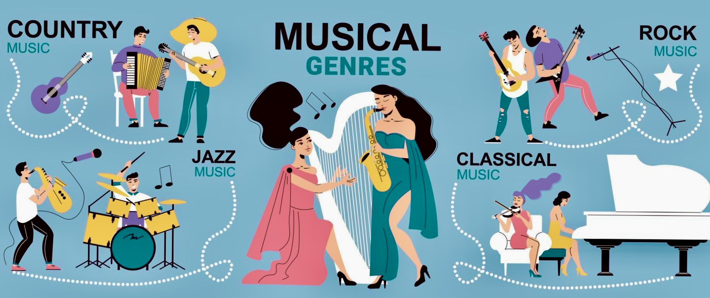

Music Genre Categorization: A Distributed Data Study
In this project, three different classifiers, including Random Forest, Decision Tree,and Multinomial Logistic Regression, were applied to predict the genre of music based on various features. The models achieved high accuracy and F1 scores, with Random Forest and Decision Tree performing particularly well, showcasing the effectiveness of these techniques for music genre classification.
Learn more

Auto-ML
The Auto-ML project automates machine learning tasks for regression and classification using Python, Pandas, pyCaret, and Streamlit. It provides functionalities for data uploading, profiling, model training, and prediction, making it easy for users to analyze and make predictions on their datasets without extensive manual intervention.
Learn more

Book recommendation with HPCI
A book recommendation matrix file (CSV), generated using MapReduce HPCI and employing user-based collaborative filtering technique, containing the likeability scores of the top 10 books for over 9000 books. Streamlit was utilized to develop a user interface (UI) for the recommendation system.
Learn more

Hotel Bookings: A Visual Analysis
The project aims to provide the construction team with data-driven insights using Tableau data visualization to optimize room renovation and construction decisions for a Hotel. By analyzing hotel booking data, the project will identify the least popular rooms that require renovation, recommend room types with high demand and optimal accommodation rates for construction, and determine the required number of parking slots for each room type.
Learn more
The Sorting Hat
It utilizes machine learning and an improvised Big Five personality method to sort users into Hogwarts houses based on their personality traits, creating an engaging and interactive experience reminiscent of the Harry Potter series.
Learn more